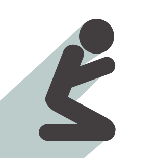
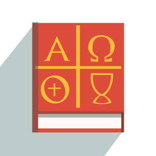

-

Prayers
Collection of institutional and other prayers
-
Saints
List of Saints and their biography
-
Bible Verse
Read and be inspired by the Bible Verses
-

Catholicism 101
List of doctrinces and basic practices
-

Missal
Read mass missal and view missalets
-
Liturgical Calendar
View the Liturgical Seasons of the Church
-
CFO Portal
Read announcement articles from CFO
-
CFO Portal
Read announcement articles from CFO